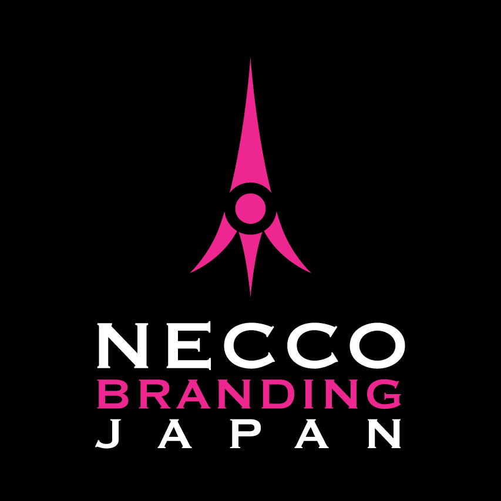

NECCO BRANDING JAPAN
根っこを掘るから、表現がぶれない。
表面的な強みではなく、その人・会社がなぜそれをするのかまで深く掘り下げます。

Concept
選ばれる理由は、外側ではなく内側にある。
NECCOは、実績・経験・価値観・顧客への想いを言語化し、ロゴ、Web、LP、プロフィール、講座紹介へつなげるブランド編集の中核です。
- 代表者のストーリー編集
- ブランドメッセージ開発
- 商品・講座の見せ方設計
- プロフィールと実績の再構成
根っこが見えると、価格ではなく“この人に頼みたい”で選ばれる。